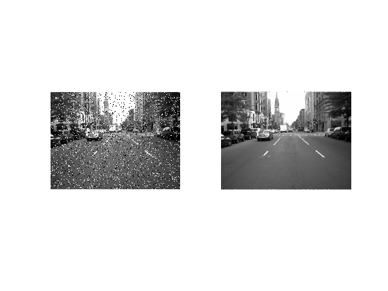

Something
TextTextTextTextTextTextTextTextTextTextTextTextTextTextTextTextTextTextTextTextTextTextTextTextTextTextTextTextTextTextTextTextTextTextTextTextTextTextText TextTextTextTextTextTextTextTextTextTextTextTextTextTextTextTextTextTextTextTextTextTextTextTextTextTextTextText jer
hold on %Final Project %Load in-built image %X = reshape(1:100,10,10) .'; %Matrix of 100 numbers for testing X = imread('street1.jpg'); X = rgb2gray(X); X = imnoise(X,'salt & pepper',0.1); % disp(X); %imshow(X); X1 = X; total_rows = size(X, 1); total_columns = size(X, 2); L = 1; M = 2*L+1; T1 = 40; %Threshold value 1 T2 = 2; %Threshold value 2 %FOR Loop - to traverse entire image matrix for i = L+1:total_rows-L for j = L+1:total_columns-L Window = X(i-L:i+L, j-L:j+L); %disp('Window: '); %disp(Window); Delta = abs(Window-Window(L+1,L+1)); %disp('Delta: '); %disp(Delta); Delta_Thresh = Delta < T1; %disp('Delta Threshold: '); %disp(Delta_Thresh); eta = sum(Delta_Thresh(:)); %disp('eta: '); %disp(eta); %Step 6 if(eta >= T2) psi = 1; %psi = 1 means that it is an uncorrupted pixel elseif (eta < T2) %disp("in"); psi = 0; end %disp('psi: '); %disp(psi); %Step 7 if(psi == 0) %disp("in"); X(i, j) = 0.*X(i, j); else X(i,j) = 1.*X(i,j); end %disp('current pixel: '); %disp(X(i,j)); val = X(i,j); %Step 8 if (X(i,j) == 0 || X(i,j) == 255) % the pixel is corrupted, replace with the median value - TODO: change this to equals Current_Window_Old = Window; %Current_Window = mtimes((Delta_Thresh), (Current_Window)); %disp('New Delta, isolating for the 1s: '); %disp(Delta); %remove all the zeros rem_zeros = nonzeros(Current_Window_Old'); %disp("Remove zeros "); %disp(rem_zeros); %calculate the median and replace the center pixel with it med = median(rem_zeros, "all"); X(i,j) = med; %disp('Median : '); %disp(X(i,j)); end end end %imshow(X); X2 = X; subplot(1,2,1), imshow(X1) subplot(1,2,2), imshow(X2)